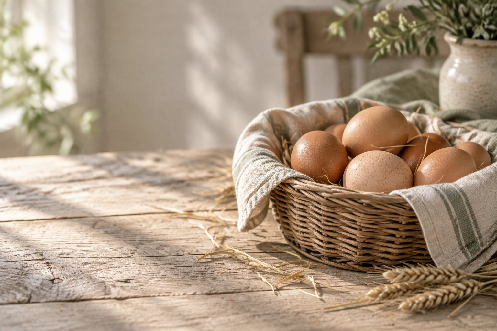
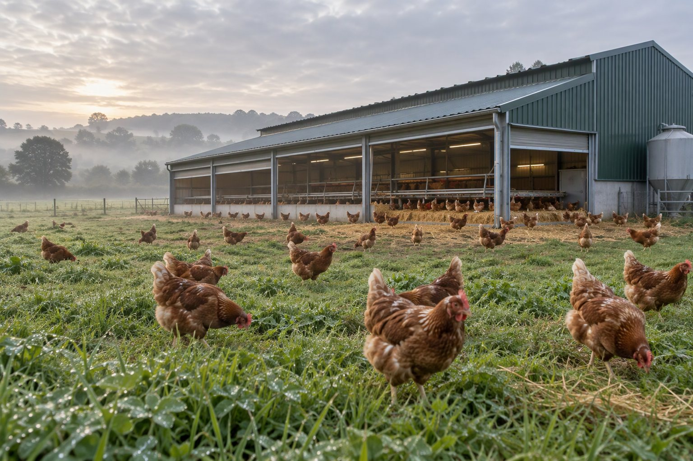
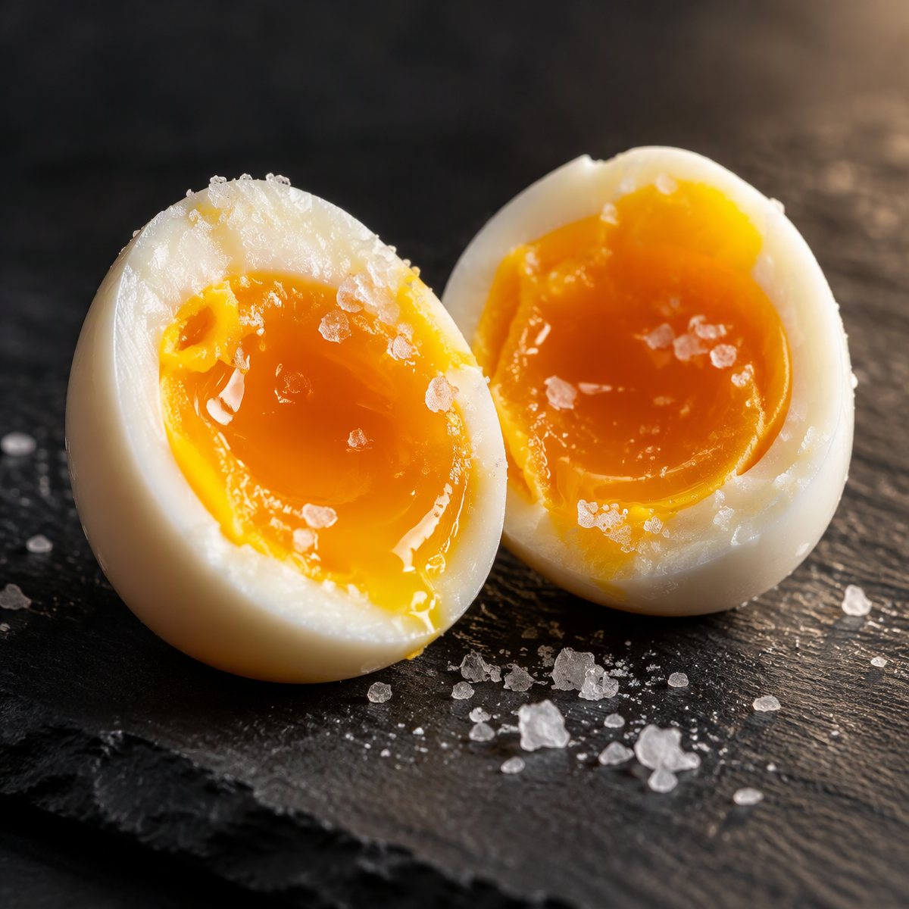
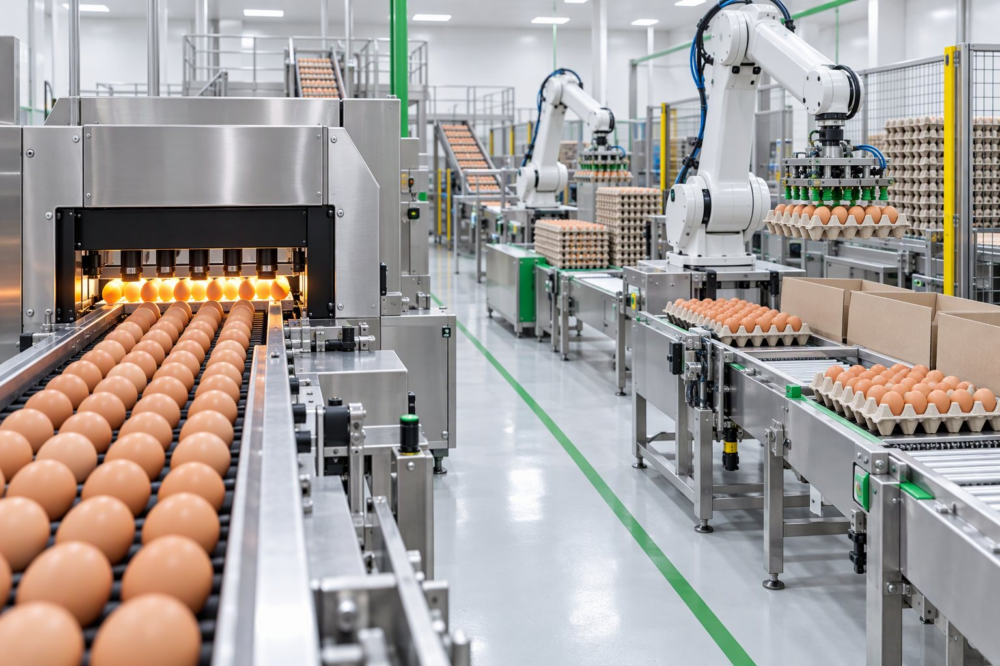

One recipe, no shortcuts
One fixed formula for every base.
- Daily probiotics
- No rapeseed meal
- Marigold for yolk colour
Premium shell eggs · raw-edible standard
Clean enough to eat raw, with a real farm taste. We control the feed, the hens, the grading and the cold chain.

Our story
China was eating more eggs than ever, but few were made to a standard anyone could check.
So we brought in a Japanese raw-edible standard and adapted it to local breeds, grain and climate: fixed feed, no antibiotic growth promoters, every egg candled, an unbroken cold chain.
Today: five farm bases, one grading centre, 20+ cities.

The standard
Every checkpoint is tested and traceable to a batch.
One fixed formula for every base.
Healthy flocks without routine antibiotics.
Third-party lab tested before release.
Tastes of egg, boiled, fried or raw.

Read the label
Our range
Four lines, one standard.
Our flagship: large, uniform, deep yolk.
10 / 20 / 30-count traysSame eggs, packed for everyday volume.
12 / 30-count cartonsPresentation boxes for holidays and corporate gifts.
12 / 24-count boxesWeight-graded for consistent results in pro kitchens.
Bulk cases · weight-gradedFrom farm to shelf
A short, visible chain from hen to shelf.
One fixed recipe, delivered to every base.
Collected several times a day, never left warm.
Every egg washed, candled and weighed.
Chilled within the hour, temperature logged.
Dated, rotated, traceable by batch code.
Where we operate
Sold in 20+ cities, including Beijing, Shanghai, Shenzhen and Chengdu.

Our commitments
Questions
Safe to eat uncooked: Salmonella is not detected in third-party tests of the packed egg.
Yes, raw or lightly cooked. Young children, pregnant women and anyone with low immunity should follow their doctor's advice.
Refrigerated, pointed end down, in the original tray. Don't wash them.
From corn and marigold in the feed, not dye. It varies a little by season.
Yes. Email us your city and volume.
Contact
Tell us what you need, where, and how much.
info@ylswan.shop